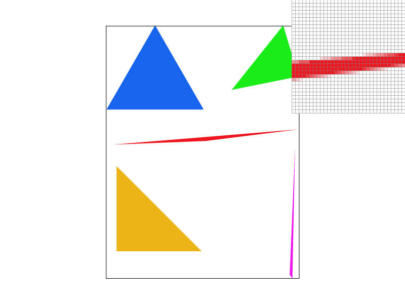

Overview
Give a high-level overview of what you implemented in this project. Think about what you've built as a whole. Share your thoughts on what interesting things you've learned from completing the project.
Section I: Rasterization
Part 1: Rasterizing single-color triangles
Walk through how you rasterize triangles in your own words.
In this part, we rasterized the triangles by utilizing the line test we went over in lecture. More specifically, our algorithm goes line by line, uses the line test to see if that sample lies within the triangle or not, and stops checking that line once it sees a sample that’s no longer in the triangle. Then it moves onto the next line, and so on until all the lines that make up the triangle have been checked.
Explain how your algorithm is no worse than one that checks each sample within the bounding box of the triangle.
Our algorithm is no worse than one that checks every sample in the triangle’s bounding box because it won’t ever check every single pixel in the bounding box. I think this is easier to demonstrate with a picture: see below.
|
|
Show a png screenshot of basic/test4.svg with the default viewing parameters and with the pixel inspector centered on an interesting part of the scene.
I don’t understand what part of this scene of colored triangles would qualify as “interesting”, so I took two screenshots just in case our tastes differ.

|
|
|

|
Here is an example 2x2 gridlike structure using an HTML table. Each tr is a row and each td is a column in that row. You might find this useful for framing and showing your result images in an organized fashion.

|

|

|
|

|
Part 2: Antialiasing triangles
Walk through your supersampling algorithm and data structures. Why is supersampling useful? What modifications did you make to the rasterization pipeline in the process? Explain how you used supersampling to antialias your triangles.
For our implementation of supersampling, we increased my sample buffer in set_sample_rate, artificially increasing the image's resolution (regarding how we sample the image). Then, in rasterize_triangle we multiiplied x and y by the square root of the sample rate--since the sample rate tells us how many samples we're taking in a box, the number of samples we're taking along the x and y increase by the square root.
We then set up the triangle's bounding box by picking the minimum and maximum x and y from these artificially blown-up points and looped through the triangle's bounding box as normal. One key change was made to the fill_pixel function, to have y also be multiplied by the square root of the sample rate to reflect the artificially-enlarged canvas we were "drawing" from.
Next, after taking these samples, we averaged the color values for each pixel in resolve_to_framebuffer. Inside of the already-existing double for loop, we put another nested double for loop to check the samples we'd gathered for each individual pixel. These samples are the very same ones we'd just put into the sample buffer. Pixel by pixel, we'd total all the data we'd collected together, then averaged them out according to the number of samples we'd collected (i.e. the sample rate). This value was then passed into the rgb_framebuffer_target like in the previous part, to be used to draw our now nicely super-sampled triangle.
Show png screenshots of basic/test4.svg with the default viewing parameters and sample rates 1, 4, and 16 to compare them side-by-side. Position the pixel inspector over an area that showcases the effect dramatically; for example, a very skinny triangle corner.
|
|
|
|
|

|
Explain why these results are observed.
We see these results (the triangles becoming "smoother") because increasing the sample rate means that we have more pieces of data to use in assembling our representation of our original image. When our sample rate is 1, that means that for each pixel, we're only taking in the data at one part of the original image, and using that data to dictate the color of the pixel. This effectively works as a binary of sorts, telling us if the pixel we're looking at is, for example, red or white in the case of the red triangle pictured in the first image.
However, if we increase our sample rate, we don't need to limit ourselves to just being red or white: instead, we can look at the average of all our values sampled (or supersampled if you will) to create the illusion of a smoother edge. Anti-aliasing effectively places semi-transparent, or "blended" pixels, along the border of an otherwise sharp edge to fool the eye into filling in the blanks more naturally.
Part 3: Transforms
Create an updated version of svg/transforms/robot.svg with cubeman doing something more interesting, like waving or running. Feel free to change his colors or proportions to suit your creativity. Save your svg file as my_robot.svg in your docs/ directory and show a png screenshot of your rendered drawing in your write-up. Explain what you were trying to do with cubeman in words.
"Talk is cheap," so here is a picture explaining what I tried to do instead:
I used Illustrator to pose the robot to my fancy, then copy/pasted those new values for the transforms of each of the shapes into the original robot svg file. I know one could go into the SVG file and hand-alter the values one-by-one as well, but that's not as fun.
(Cubeman's red is also based on the color of Ryu's headband: it's slightly different from the default.)
Section II: Sampling
Part 4: Barycentric coordinates
Explain barycentric coordinates in your own words and use an image to aid you in your explanation. One idea is to use a svg file that plots a single triangle with one red, one green, and one blue vertex, which should produce a smoothly blended color triangle.
Show a png screenshot of svg/basic/test7.svg with default viewing parameters and sample rate 1. If you make any additional images with color gradients, include them.

|
Part 5: "Pixel sampling" for texture mapping
Part 6: "Level sampling" with mipmaps for texture mapping
Section III: Art Competition
If you are not participating in the optional art competition, don't worry about this section!